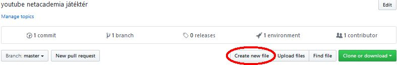
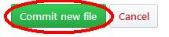

NetAcademia HTML és CSS alapozó tanfolyam 1.
Itt gyakorolhatod mit tanultál a NetAcademia HTML és CSS alapozó tanfolyam 1. során.
Első feladat: csinálj egy könyvtárat magadnak a beceneveddel
megjegyzés: a github.com -on a file-ok létrehozása kicsit más, mint ahogy a tanfolyamon az windows asztalon dolgozunk,
de ne aggódj, ez sem nezezebb, csak itt mindent a böngészőben lehet csinálni. Először is ..
- menj lovas12:netacademia GitHub oldalra.
- kattints a "Create new file" gombra

- a név mezőbe írd be a nevedet, egy "/" jelet és hogy "utazz.html". A "/" beírásakor a nevedet kiemeli, az lesz a könyvtár neve
- Szerkeszd a tartalmát a videóban mutatottak szerint.
- Mentsd el az oldal alján található zöld színű "Commit new file" gombbal.

- Kis idő elteltével az eredményt megtekintheted egy új github.io oldalon, a
https://lovas12.github.io/netacademia/neved/utazz.html
csak írd a neved helyére, amit az előbb használtál.
Tippek